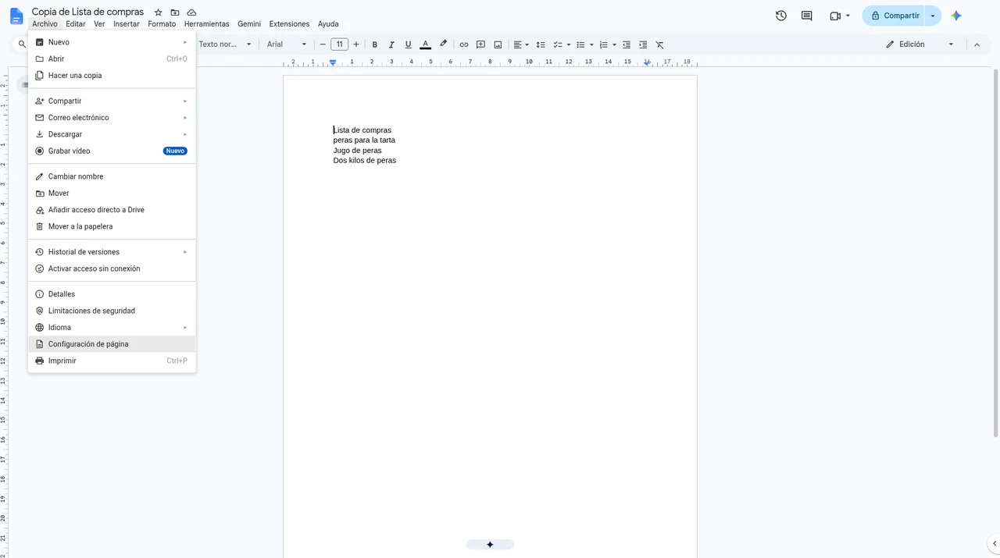
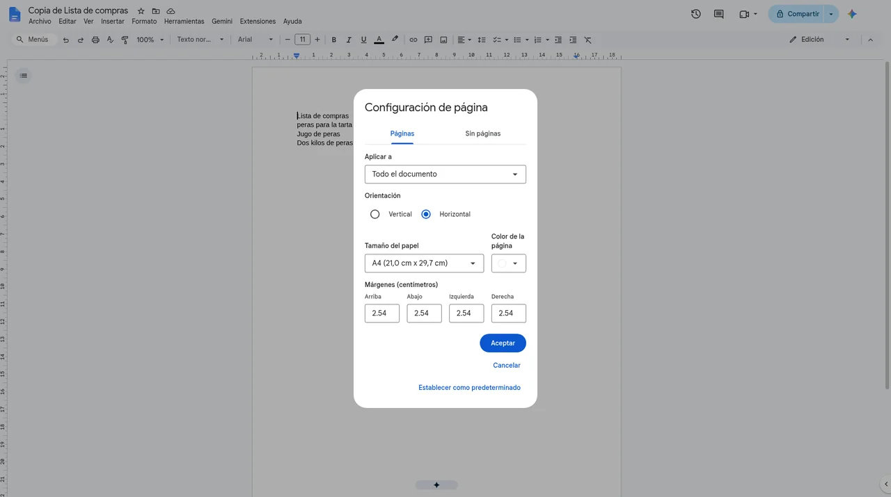
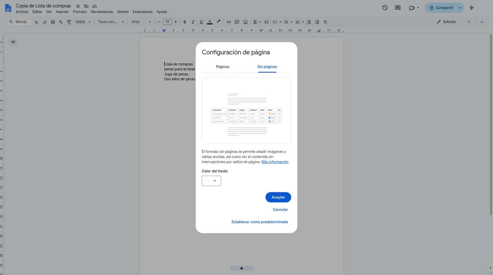
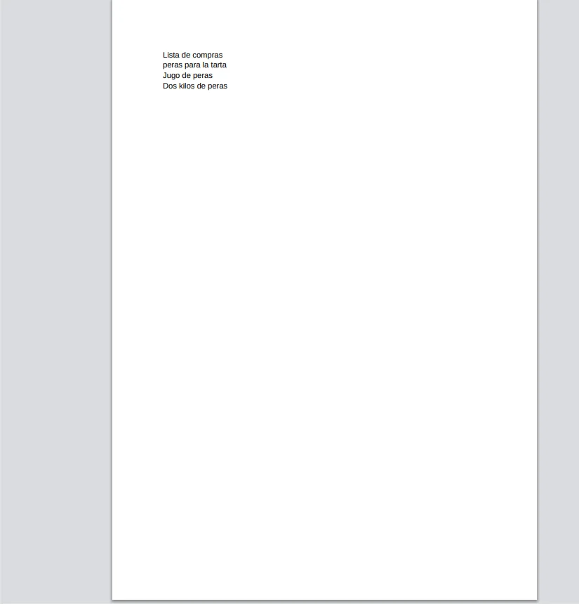

Curso de Google Documentos › Archivo › Lección 9
Lección 9 de 53 · menú Archivo
Cómo configurar la página e imprimir un Google Doc (márgenes y tamaño)
Fecha del video: · Programado
¿Tu Google Doc sale cortado al imprimir? Con Configuración de página, en el menú Archivo, elegís la orientación, el tamaño del papel y los márgenes, y después lo imprimís o lo guardás como PDF.
En el ejemplo usamos una copia de prueba de «Lista de compras». No se guardó ningún cambio: en el diálogo se tocó «Cancelar» y la impresión también se canceló.
Paso 1: abrí Archivo → Configuración de página
Andá a Archivo y tocá «Configuración de página». Más abajo, en el mismo menú, está «Imprimir» (también con Ctrl + P).

Paso 2: elegí orientación, tamaño del papel y márgenes
Arriba dejá «Páginas». Ahí elegís la orientación («Vertical» u «Horizontal»), el «Tamaño del papel» (por ejemplo, A4) y, en «Márgenes», la medida de cada lado (arriba, abajo, izquierda y derecha). Cuando termines, tocá «Aceptar». Con «Establecer como predeterminado» esa configuración queda para tus documentos nuevos.


La otra pestaña, «Sin páginas», es para leer en pantalla: el documento queda continuo, sin cortes de página. Para imprimir conviene dejar «Páginas».

Paso 3: imprimí o guardá como PDF
Tocá Archivo → Imprimir (o Ctrl + P). Se abre la vista previa de impresión, y desde ahí imprimís o guardás el documento como PDF. Esa ventana es del navegador, no de Docs.

Mirá el Short
Estreno del Short: 25/11/2026 · 09:00 (hora Argentina)
Video relacionado: Google Docs: menú Archivo paso a paso (tutorial completo) — el video largo del menú Archivo (verlo en YouTube).
Fuente oficial: Ayuda de Editores de Documentos de Google. Capturas propias en un documento de ejemplo («Lista de compras»). El video usa voz generada con IA.